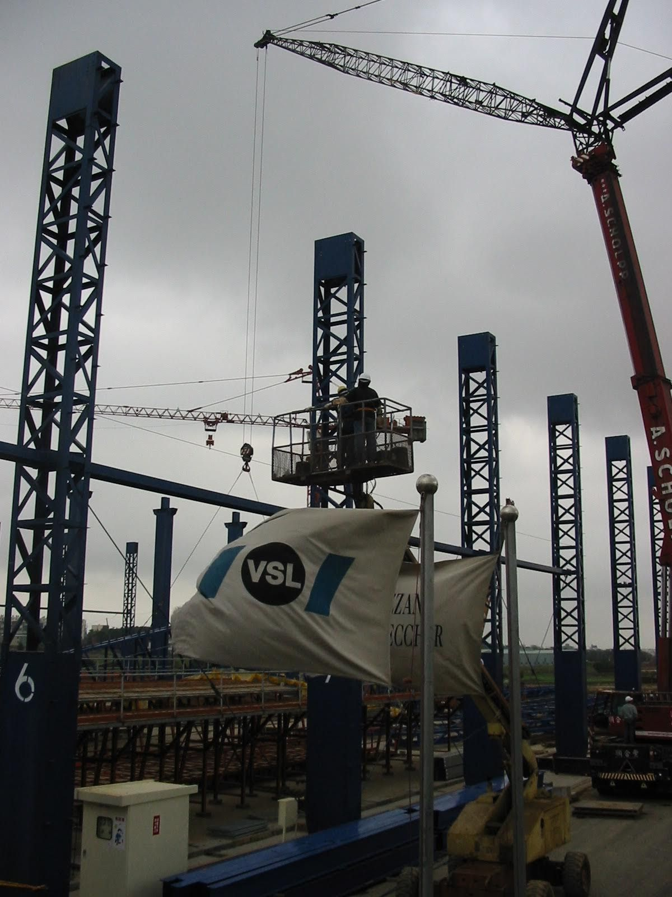

魔鬼在細節：工程與實作文化
從高鐵工地到教育，細節文化決定品質——不是口號，是每個結點都沒有彎矩。

高鐵年代，我的直屬上司阿諾是瑞士工程師：溫文有禮，長髮像浪人，不抽菸不喝酒，要求卻極多。他對我說：「你的結構設計要所有的結點都沒有彎矩。」
白話就是魔鬼在細節裡。我設計的是工程結束就會拆的倉庫，他仍這樣要求。後來幾次颱風地震，那棟倉庫一直是工地裡最不漏水、最耐用的房子。
他們公司做預力結構的鋼索鋼腱：體積小、耐用、高精度、高單價。很少人知道，你從台北搭高鐵到新竹，有一半路線裡嵌著這種瑞士鐘錶般的精密。
阿諾也提到教育：每個工科畢業生都要有完成整個專案的能力——他自己就做過一棟從設計到蓋好的小房子。台灣大學裡的老師，多半沒有這種「整案做完」的實作要求。
細節不是完美主義的虛榮，而是一種可複製的文化。台灣若要高產值，先要讓細節變得理所當然，而不是例外。
來源: 台灣大未來 — 今日瑞士，明日台灣 — 張渝江 · 1. 瑞士與台灣